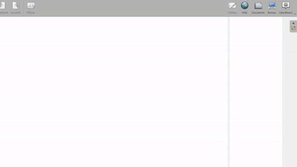

التفاعل مع التطبيقات الأخرى
يتيح لك وضع سطح المكتب التفاعل مع نظام التشغيل والتطبيقات المختلفة مع إبقاء أدوات OpenBoard متاحة فوقها.
ببساطة ما عليك سوى النقر على الأيقونة التالية:
استخدم أداة التحديد
 للتفاعل مع سطح المكتب والتطبيقات الأخرى.
للتفاعل مع سطح المكتب والتطبيقات الأخرى.
إضافة ملاحظات على التطبيقات أو مواقع الويب
يمكنك إضافة ملاحظات أو الكتابة فوق أي تطبيق باستخدام القلم
 أو قلم التمييز.
.
أو قلم التمييز.
.
